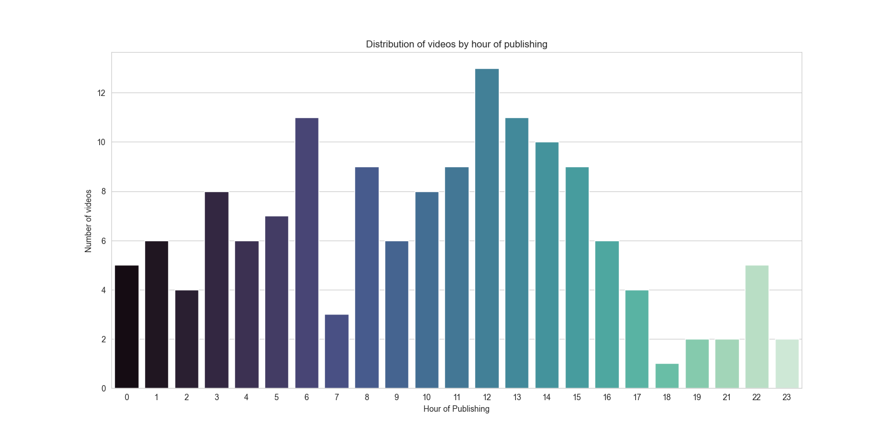
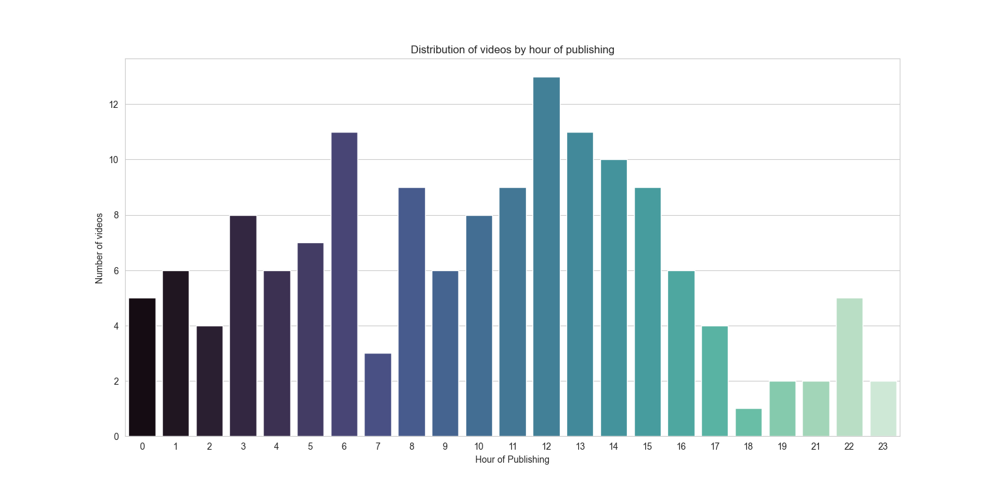
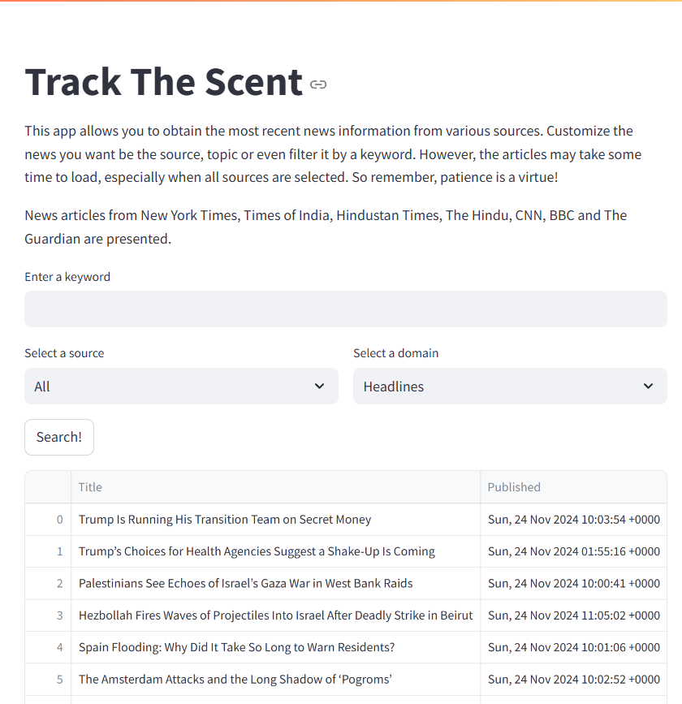
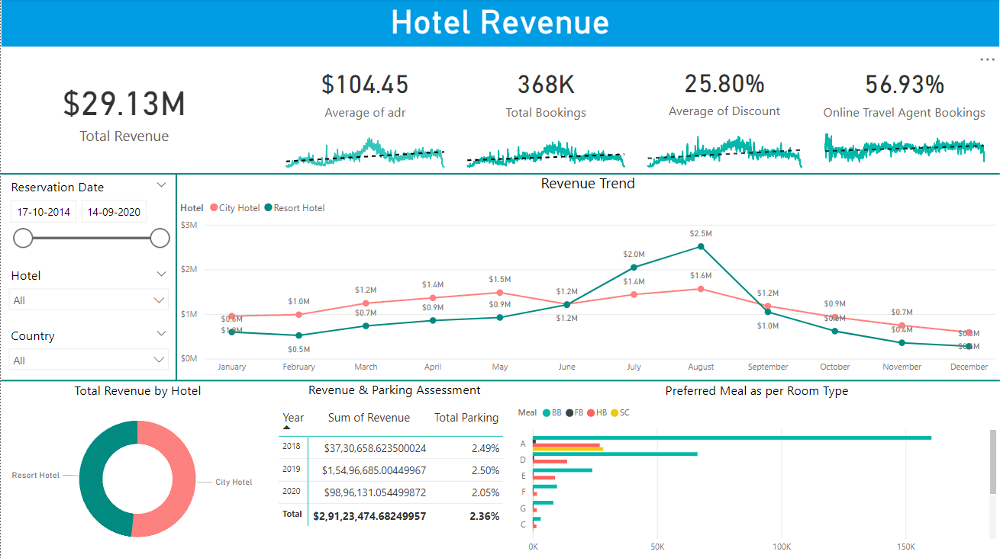
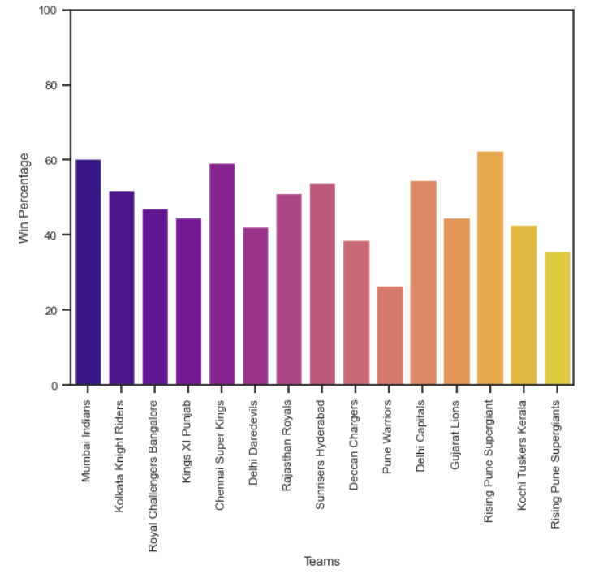
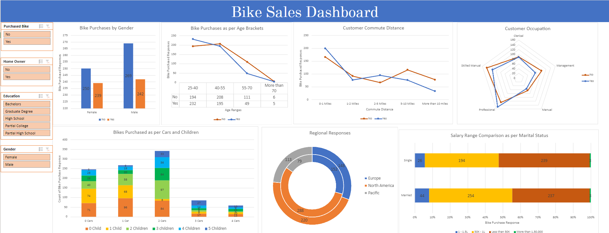
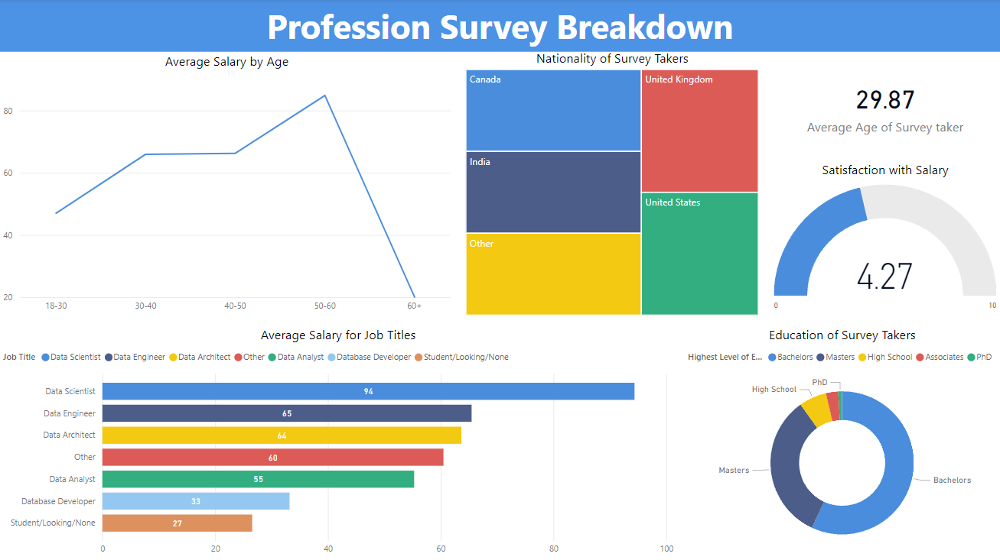

Utilized BigQuery to analyse trips over the years, popularity of stations, demographic analysis and a whole lot more, using CTEs and Window Functions
Explored the same data in Looker Studio to visualize trips over the years, customer demographics, average trip durations and more.
 

Worked with Youtube Data API from Google to get the trending videos in India.
Using Python, the trending videos were extracted and stored in a csv file for further analysis.
The file contains video details such as ID, description, views, likes and comment count, category id, and others.
Conducted some preliminary data analysis on the dataframe and visualization using Seaborn. Visuals included histograms for distribution of video statistics, bar chart for distribution of videos based on publishing hour, wordcloud to depict recurrence of video tags, and many more.
This analysis allows the viewer to obtain insights on popularity of videos and influence of variables such as categories, video duration and other attributes on it.

Aimed at data collection, this project allows the user to obtain news articles by a keyword, specific source, specific news domain, or even a combination of the three.
The articles are obtained from multiple sources such as NY Times, Times of India, BBC, CNN and others.
Streamlit was utilized to create the web app. Employed Feedparser and Newspaper libraries in Python to parse through the news sources and
obtain their details including title, source, summary and others.Pandas was also utilized to create the dataframe with the details of news articles.
The application is deployed on Streamlit Cloud and can be readily used.

Explored factors of importance and derived insights from hotel data.
Utilized aggregation functions, group by, joins and more, to conduct assessments in SQL, such as revenue for hotels across the years by hotel type and country, meal & room preferences, peak check-in periods and more.
Obtained data from MySQL Server to PowerBI and created measures to assess total bookings, total parkings and more.
Created a dashboard with elements analyzing revenue distribution across hotels, parking space evaluation, and room & meal preferences.
Finally, created slicers to filter all the data based on hotel type, country and selected period for focused evaluation.

Comprehensive Exploratory Data Analysis conducted on IPL data using the Pandas and Seaborn libraries in Python.
Assessed aspects such as team statistics, team wins based on venues and cities of the match, and team wins over the years amongst others.
Created visual elements for venues with teams having most wins, variation of result margin over the years, toss decision leading to a win and more.

Utilized MS Excel to clean, standardize and convert data values for further assessment.
Created pivot tables to analyze impact of factors such as age, gender, commute distance, and more on the decision to purchase a bike.
Crafted a dashboard and produced visualizations to analyze regional responses for a bike purchase, assessment for response based on cars and children, marital status and more.
Finally, created slicers to filter all the data for selective evaluation.

Using PowerBI, evaluated the dataset for factors of low importance and eliminated the same, along with conversion of data into suitable formats/ranges for effective visualization.
Crafted an intuitive dashboard to analyze professions based on aspects such as average salary as per age brackets, job titles and gender, preferred programming language for professions, preferences of survey takers for employment, among others.
Also, utilized drill down for further granular evaluation.

Evaluated the datasets and explored factors impacting health of employees via SQL, utilizing aggregation functions, case statements, group by, joins and more.
Inspected individuals as per Body Mass Index, smokers and drinkers, & age while also analyzing reasons for their absence.
Examined additional factors involving increment on hourly wage, correlation between travel expense and commute distance among others
Procured data from MySQL Server to PowerBI and visualized distribution of absenteeism cross different time periods.
Created visual elements for segregation of employees based on various factors, absenteeism statistics based on age, reason for absence & more, and slicers for detailed evaluation.
Combined all the elements to craft an intuitive and insightful dashboard.

Imported car sales data from an Excel sheet to PowerBI and evaluated the data quality with respect to distinct, unique, null values and the data types.
Crafted an intuitive report containing multiple KPIs for car sales (YTD & MTD Total Sales, YOY Growth in Total Sales and more), average price analyis (YTD & MTD Average Price, YOY Growth in Average Price and more) and car sold metrics.
Created visuals for Sales Weekly/Monthly Trend, Total Sales by selected parameter and by region, among others.
Utilized additional features of PowerBI such as parameters to create a dynamic visual as per selected field, menu for navigation, bookmarks to switch visuals and more.